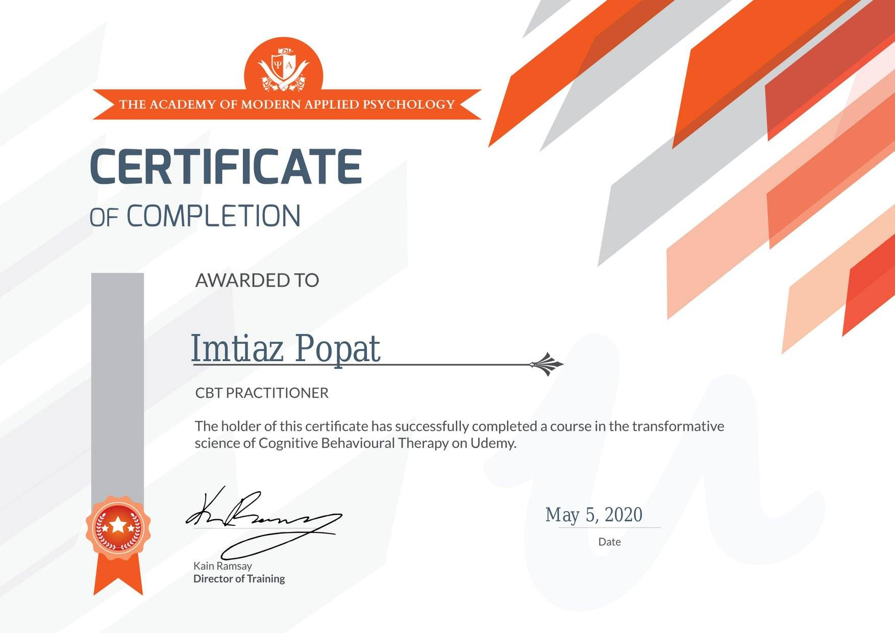

Imtiaz Popat Therapeutic Counsellor
Certified Cognitive Behavioural Therapy (CBT) Practitioner by the Academy of Modern Applied Psychology

×

I Care About Your Mental Health.
I am a certified Cognitive Behavioral Therapy (CBT) Practitioner by the Academy of Modern Applied Psychology and a graduate of the Vancouver College of Counsellor Training. I practice a person centred approach to counselling therapy, where I focus on the person and not the problem. I also apply Mindfulness practice in my counselling therapy.
I can help you better understand the challenges you are facing and together we can work to resolve some of those challenges.
I can help you manage your anxiety, conquer your anger and deal with your depression.
In Person or Video Counselling Available for:
• Anxiety
• Depression
• Anger Management
• Addiction
• Relationships
• Grief
• Mindfulness
• Guided Meditation
• Facilitation
• Meditation
• Conflict Resolution
• Herbology
I practice a person centred approach to counselling therapy, where I focus on the person and not the problem. I can help you better understand the challenges you are facing and together we can work together to resolve some of those challenges. I can help you manage your anxiety, conquer your anger and deal with your depression.
Having worked with people from all walks of life with a wide diversity of personal issues and emotional difficulties, I am very aware of how hard it can be to take the first step and seek help. Making the decision to begin Counselling and finding the right therapist to work with can feel daunting.....you may wonder whether you really need therapy or how it can help you…
If you have any questions about what is troubling you?
About Therapeutic Counselling
The decision to enter personal therapy often comes at a time of desperation, feeling deep emotional pain, maybe after
months or even years of trying to deal with it or get over it.
It could be more of a feeling that there is a particular issue that needs some attention or you have become aware of
certain patterns which are repeating in your life. Maybe it is that a recent loss, bereavement, difficult relationship
or experience has made it harder to cope with ordinary life....the reasons and issues which bring people to counselling
are too diverse to mention.
There are times in life when professional help is needed to deal with psychological and emotional difficulties, internal conflict and mental pain can be very debilitating. Others may not be aware of or be able to comprehend the extent of the pain you are going through, which makes it all the harder. It can be minimised and suppressed, you may try and carry on, cope, put on a 'mask' or a front but without help, the trauma or hurt remains unresolved and continues to have a negative impact. Everything is interconnected, we may 'split' mind and body, thoughts and feelings but we can unconsciously use our bodies to express emotional pain, suffer from stress related illnesses or have symptoms which have a psychological component. You may sense or know on a deeper level that you do need to talk, to be heard, that it is necessary to acknowledge your emotional wounds for them to heal. As you explore things with an empathic other who has the training and skills to facilitate insight and understanding, you can feel safer knowing that the relationship is confidential and you are free to express anything, without being judged. This can be a freeing and liberating experience, although it can also feel quite scary and daunting to begin with. It can make you feel vulnerable opening up to another, expressing innermost thoughts and feelings but a therapist knows and understands this and acts as a 'container' for your feelings and anxieties.
The human psyche will unconsciously create defences to shield us from overwhelming psychological pain which threatens our functioning and survival. These defences are creative means of coping with unbearable trauma and experiences and enable us to carry on and cope but these can become detrimental. Still being unconsciously 'protected' from a painful experience or relationship which is no longer happening, prevents full emotional expression or meaningful connection with others. Psychological defences can also begin to break down over time and distressing feelings, memories and symptoms invade because the original pain needs to be worked through and the experience integrated. This work has to be done to be able to live life fully in the present and not be functioning in a 'numb' state or be continuing to act or react in a specific set of ways because of transference of past events or relationships. Still operating in a defensive or overly vigilant or cautious way or having beliefs based on traumatic past experiences limits day to day existence.
Engaging in the therapeutic process can enable you to become aware of the impact or effect which difficult and painful past experiences or relationships had upon you and how this continues to affect you in the present. Conscious awareness and insight means change is possible. Talking, exploring, naming, speaking aloud...using language, this allows our experiences to be understood and symbolised so they can then then be integrated. When they have been extremely painful this has not been able to occur as the self care mechanisms/defences operate to fragment and split off painful memories and feelings and keep them out of awareness. This means they are not dealt with and can continue to influence you unconsciously, when things can be explored in a trusting and empathic relationship, realisations take place and gradually new ways of being and relating can be envisioned and implemented. When you explore your inner world with a professional therapist, a 'mirroring' occurs and this helps you to begin a more conscious, honest, open and aware relationship with your self and others.
Therapeutic counselling is about relationship, it is a process which you engage in, it is not something that is done to you and nothing is changed for you. It is more about providing the right environment for your personal growth and change. My own life experiences, training, personal development and self awareness enable me to provide the conditions in which this transformational process can occur. You need to be ready to engage in this process, it is not effective if you are entering therapy for someone else, coming reluncantly because they want you to. For some it is only when at 'rock bottom' or in personal crisis that help is sought, often still battling with ambivalent feelings,doubts, resistance and fear but if you are ready and able to engage in it...personal therapy really can help.
The way you treat yourself sets the standard for others....
How you feel about yourself influences how others treat you, if you are treating yourself badly and saying critical and 'shaming' things to yourself daily, if you do not value yourself, treat yourself as equal, good enough, or worthy, how will anyone else?
It can take courage to work through painful losses, acknowledge your hurt, to grieve and slowly accept you cannot change the past or anyone else, feeling powerlessness over abuses and wrongs which were done to you, feeling helplessness or anger that you could not make people or life treat you differently. However, if you can work through these past hurts it is possible to feel differently now, in the present, for the past to no longer contaminate this moment and therefore your future. If you feel good about yourself, have healthy personal boundaries, feel self respect and believe you have value and worth.....others will too....therapy can help you to regain or achieve a more authentic and empowered sense of self.